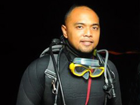
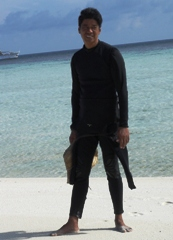

Name: Gordos Mateo R. Gojunco, EMT
Diving since: 2003
Certifications: PADI Scuba Instructor, NAUI Divemaster, NAUI Nitrox Diver, Emergency Medical Technician – Defibrillation, Emergency First Response Instructor, High Angle Rescue Technician, Advanced Cardiac Life Support Provider
Nr. of Dives: 3’000+
I dove all around the Philippines and I’ve seen quite a lot of dive sites in Anilao (Batangas), Apo Reef, Puerto Galera, Malapascua Island, Coron and for sure the famous Tubbataha Reef, which is my favorite dive site. It is considered as the Mecca of Diving in the Philippines with nice, colorful walls and overhangs, good currents and a huge variety of marine life. I can’t wait for the next season!
I love teaching scuba, organizing and realizing dive trips and in general every activity under the sun!
Name: Danny Felizardo
Diving Since: 1981
Certifications: PADI Divemaster, CMAS Dive Master
Nr. of Dives: 10’000+
When I’m not at sea, on one of our Liveaboards in Tubbataha Reef, Apo Reef or in the Visayas, I’m leading dives in our Anilao Outrigger Resort in Batangas. With one word, I spend most of my life “underwater” and I love what I’m doing.
I’m diving since more than 30 years now and I’ve experienced a lot, in and under water. From whale sharks who accidentally crossed my way, tiger sharks who were more surprised than I was to proposals underwater and even scuba weddings.
I don’t have a favorite dive site but I’m definitely looking forward to all the next Tubbataha seasons.
{kind=link}
{kind=link}
{kind=link}